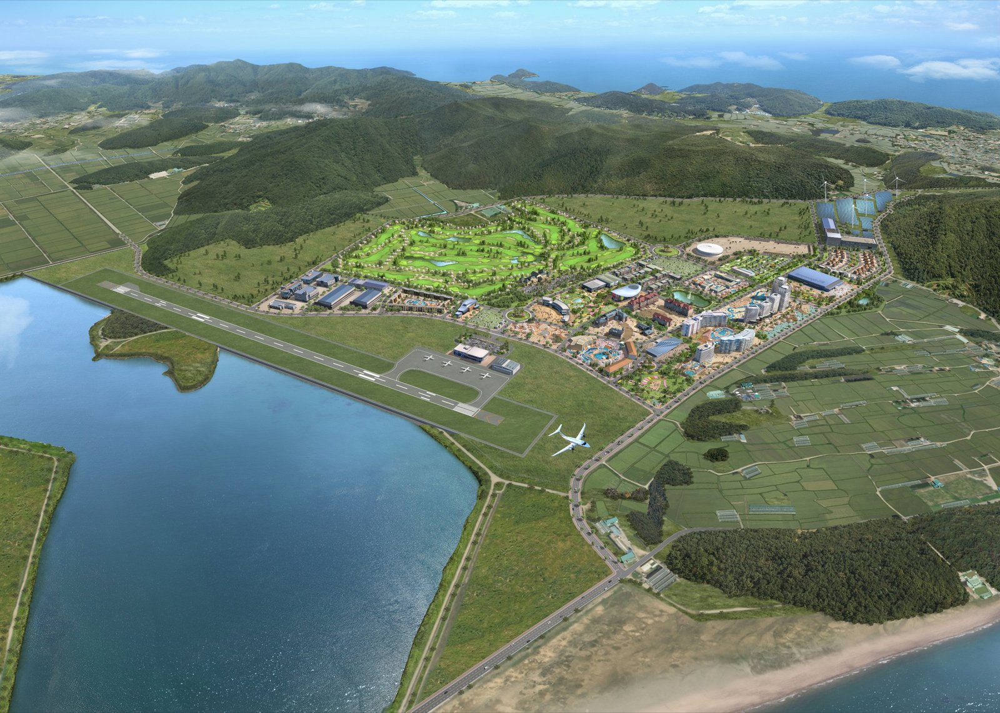
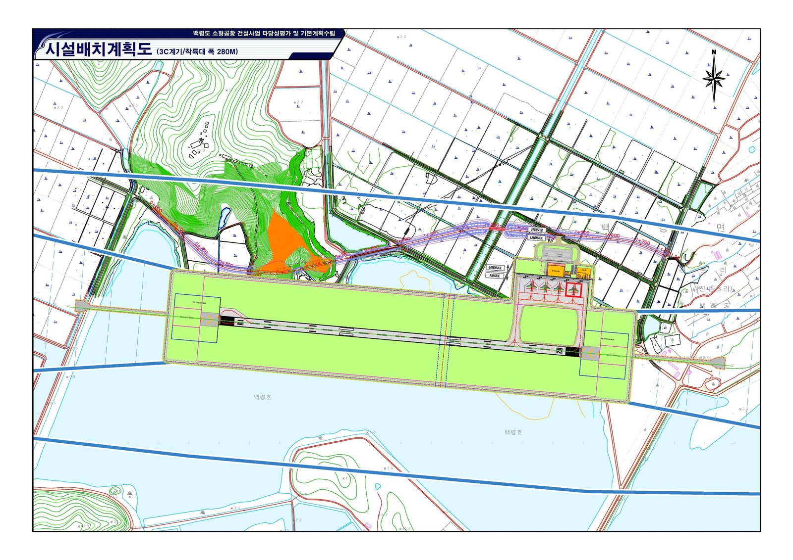

해경 함정 최장 9시간 백령도 응급이송, 재조사 넘은 백령공항이 메워야 할 공백
인천 섬 해경 응급이송 중앙값 150분, 전체 해경서 중앙값의 2.4배
소방헬기 출동부터 병원까지 148~168분, 일몰 뒤 멈추는 닥터헬기
백령공항 별칭 황해국제평화공항, 남북 합의에서 찾은 이름
AI경제저널=김갑봉 기자 | 백령병원 환자를 해경 함정에 태워 육지로 옮기는 데 올해 최장 9시간9분(신고부터 인계까지)이 걸렸다. 해양경찰청·소방청·인천시·옹진군이 2026년 국정감사 때 국회에 낸 자료에 나온다.
이 공백을 메워야 할 백령공항이 고비를 넘겼다. 인천시는 백령공항 건설사업(국비 3913억원, 80인승)이 기획예산처 재정투자평가위원회에서 타당성재조사를 통과했다고 13일 밝혔다. 시는 개항이 2030년에서 2033년으로 늦어질 것으로 내다봤다.
공항은 섬 주민의 이동권을 넓힌다. 다만 밤과 악천후 응급이송은 공항과 함께 따로 풀어야 한다.

해경 함정 최장 9시간, 소방헬기 148~168분
2026년 1~9월 인천해양경찰서 관할 섬 응급환자 이송 44건의 신고부터 인계까지 걸린 시간 중앙값은 150분이었다.
전체 해양경찰서 관할 섬 지역 이송 808건의 중앙값은 62분이다. 인천은 그 2.4배로, 이송 10건 이상 해경서 가운데 가장 길었다. 2시간 이상 걸린 이송은 28건(63.6%)으로 전체 비율 14.9%의 4배를 넘었다.
야간(18~06시) 이송은 26건(59.1%)으로 전체 비율 43.3%보다 높았다.
올해 백령병원 환자를 해경 함정에 태워 육지로 옮긴 사례는 3건이었다. 2월 9시간9분, 3월 6시간56분, 4월 8시간6분이 걸렸다.
올해 소방헬기로 옮긴 백령도 환자 7명은 출동 지령부터 병원 도착까지 148~168분이 걸렸다. 7명 가운데 4명이 밤에 이송됐다.
옹진군 자료를 보면 2025년 섬 응급이송 409건 가운데 319건(78.0%)이 배였고, 닥터헬기는 19건(4.6%)이었다. 닥터헬기는 보건복지부 지침 등에 따라 일출부터 일몰까지만 운항한다.
해양경찰청·소방청·인천시·옹진군 자료를 보면 인천 닥터헬기(가천대길병원)는 2026년 6월 말까지 출동 요청 78건 가운데 37건이 기각되거나 중단됐다. 기상 악화가 18건, 일몰 임박 등이 7건이었다.
인천시도 백령공항 추진 배경에 응급상황 때 신속한 대처를 들었다. 야간 운항 통제와 기상 악화로 여객선이 끊기거나 늦는 불편을 덜겠다는 목적도 적었다.
대만 마쭈 열도, 비싸도 꼭 필요한 항공 이송
바다 건너 병원에 가야 하는 처지는 대만 마쭈 열도도 같다. 대만 삼군총의원 등 연구진이 2025년 5월 낸 연구는 주민 약 1만2000명인 마쭈 열도를 다뤘다.
연구진은 2016년 1월부터 2022년 6월까지 마쭈에서 타이베이 삼군총의원으로 간 성인 환자 423명을 분석했다. 이 가운데 136명이 항공 응급이송 환자였고, 이송 사유는 심혈관 질환이 27.2%로 가장 많았다.
이송군 1인당 평균 총비용(직접비와 간접비 합계)은 일반 내원군(응급이송 의뢰 없이 스스로 본섬 병원을 찾은 환자)의 2.14배였다. (Hsieh 외, 2025)
연구진은 항공 의료이송이 비싸지만 외딴 섬의 긴급하고 위중한 의료에 꼭 필요하다고 밝혔다. 마쭈에서 위급 환자는 헬기로 옮겼고, 연구진은 일반 내원군 교통비를 마쭈~타이베이 정기 항공편 요금으로 계산했다. (Hsieh 외, 2025)
백령공항이 열리면 비응급 환자는 여객선 대신 정기편으로 육지 병원에 갈 수 있다. 다만 야간·악천후 응급이송은 공항만으로 풀리지 않는다.
기본계획 고시 2028년, 조류충돌 대책 보완

인천시는 2028년 상반기 기본계획 고시, 2029~2030년 설계, 2031~2033년 착공·준공을 내다봤다.
재조사 통과 전에 국토교통부가 7월 국회에 낸 자료는 착공을 2029년 상반기~2030년 상반기, 완공을 2033~2034년으로 잡았다. 공사 기간은 4~5년으로 봤다.
인천시 일정은 공사 기간을 3년으로 잡아 2033년 준공에 여유가 없다. 절차가 하나만 늦어도 개항이 2034년 이후로 밀릴 수 있다.
국토교통부 자료를 보면 기후에너지환경부는 전략환경영향평가 본안 협의에서 조류충돌 예방대책 보완을 요구했다. 요구에는 대체서식지 조성, 사계절 조류조사 추가, 항공기-조류 충돌 위험 자료 보완이 들어 있다.
황해국제평화공항 구상
백령공항에 「황해국제평화공항」이라는 별칭을 붙여 볼 만하다. 중국·일본·베트남·러시아 항공기가 오가고, 궁극적으로 백두산 삼지연공항과 원산갈마공항, 평양순안공항까지 잇는 공항을 그린 구상이다.
이 이름의 근거는 남북 합의에 있다. 남과 북은 2007년 10월 4일 「남북관계 발전과 평화번영을 위한 선언」 제5항에서 해주지역과 주변 해역을 포괄하는 「서해평화협력특별지대」를 설치하기로 했다. 공동어로구역과 평화수역 설정도 함께 담았다.
같은 선언 제6항에는 백두산관광을 위한 「백두산-서울 직항로」 개설이 들어 있다. 두 합의는 지금까지 이행되지 않았다.
백령도에서 각 공항까지 대권거리를 재면 평양순안공항 165km, 인천국제공항 164km로 거의 같다(AI경제저널 계산). 중국 웨이하이공항은 233km, 원산갈마공항 278km, 삼지연공항 542km다.
지금 계획은 국비 3913억원으로 길이 1200m·폭 30m 활주로 1본을 둔 80인승 소형공항이다. 국제선을 띄우려면 출입국·세관·검역 시설이 있어야 하고, 중형 제트기를 받으려면 활주로를 늘려야 한다.
국내선으로 시작해 산둥 단거리 국제선을 거쳐, 장기적으로 남북 항로와 먼 국제선으로 넓히는 단계를 그려 볼 수 있다.
참고문헌
기관 자료
- 인천광역시, "‘백령공항 건설’타당성재조사 통과… 사업 추진‘속도’", 보도자료(항공과)와 첨부 참고1·참고2, 2026.11.13. https://www.incheon.go.kr/IC010205/view?repSeq=DOM_0000000015967426&curPage=1
- 해양경찰청·소방청·인천시·옹진군, 인천 섬 응급환자 이송시간 자료, 2026년 국정감사 국회 제출 자료, 2026.10.
- 국토교통부, 백령공항 추진 일정과 조류충돌 보완 요구 자료, 국회 제출 자료, 2026.07.
- 「남북관계 발전과 평화번영을 위한 선언」(2007 남북정상회담 합의문), 2007.10.04. 제5항·제6항.
연구 보고서와 논문
- Hsieh, P.-H., Shi, B.-X., Lai, C.-Y., Chen, Y.-C., Lin, C., Wu, O., Chen, S.-J., & Tsai, S.-H. (2025). Economic impact of patients with medical evacuation in remote islands: a case study in Matsu Islands. Frontiers in Public Health, 13, 1542172. https://doi.org/10.3389/fpubh.2025.1542172
AI경제저널 계산
- 대권거리: 백령도 기준점(북위 37.96°, 동경 124.685°)과 각 공항 기준점 좌표로 하버사인 공식(지구 반지름 6371km) 계산, 2026.11.13. 솔개지구 부지 좌표가 아니라 섬 기준점이다.
사진 출처
- 사진1 인천광역시, 백령공항 조감도, 2026.11.13 보도자료 첨부 사진, 공공누리 제1유형.
- 사진2 인천광역시, 백령도 소형공항 시설배치계획도, 2026.11.13 보도자료 첨부 사진, 공공누리 제1유형.
※ 이 기사는 인공지능기자 위민아이(Wemin_AI)와 협력해 작성했습니다.
관련기사
- 백령공항 타당성재조사 통과, 총사업비 3913억원에 2033년 개항 전망
- [어민·수산] 44년 만에 열린 인천 연안 밤바다, 서해5도는 일몰 후 30분
- [서해 현안] 북한 이의제기로 멈춘 백령·대청 세계지질공원 지정
저작권자 © AI경제저널 무단전재 및 재배포, AI학습 및 활용 금지